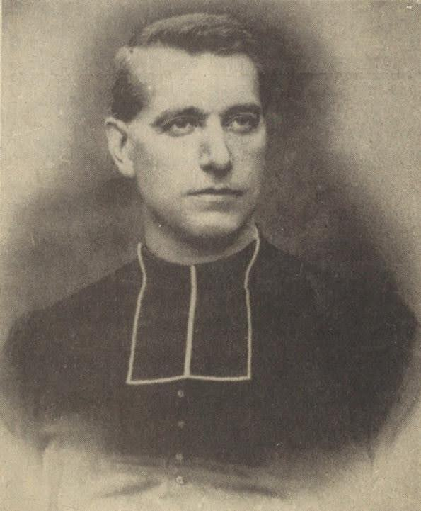

>

Christian de Bretenière
Fondateur de l’École Saint François et restaurateur de la Maison Natale de Saint Bernard
1840-1914
Prière
Esprit Saint, Nous te prions pour le renouveau missionnaire dans notre pays.
Nous te prions d'envoyer de nombreux ouvriers à ta moisson, de susciter dans les cœurs un profond désir
d'évangéliser nos contemporains selon les caractères et apostolats naturels.
Renouvelle en
nous tes grâces, Seigneur, pour qu'avec joie et ardeur,
nous sachions toujours plus
fidèlement témoigner et proclamer ton Amour.
Par
l'intercession des saints de France, Esprit Saint, nous te
confions nos concitoyens : qu'ils découvrent que le
Royaume est proche.
Amen
Dieu nous te louons, Seigneur nous t’acclamons,
Dans l’immense cortège de tous les saints.
1 - Par les apôtres qui portèrent la parole de vérité,
Par les martyrs emplis de force dont la foi n’a pas chancelé ;
2 - Par les pontifes qui gardèrent ton Église dans l’unité,
Et par la grâce de tes vierges qui révèle ta sainteté ;
3 - Avec les saints de tous les âges, comme autant de frères aînés,
En qui sans trêve se répandent, tous les dons de ta charité ;